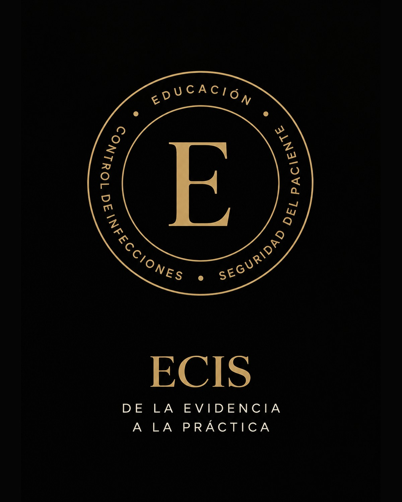

PROFESIONALES DETRÁS DE ECIS
Dirección, contenidos y gestión institucional.

DIRECCIÓN Y CONTENIDOS
Lic. Lucas Aranda
Especialista en Epidemiología y Control de Infecciones · Fundador de ECIS
Licenciado en Enfermería desde 2016, cuenta con más de 10 años de trayectoria en el ámbito de la salud y formación específica en Epidemiología y Control de Infecciones.
Su experiencia abarca el ámbito asistencial —emergencias, terapia intensiva, unidad coronaria y rehabilitación integral— y el trabajo en epidemiología, vigilancia, prevención y control de infecciones y seguridad del paciente.
Actualmente trabaja en prevención y control de infecciones y Seguridad del Paciente dentro de una institución de rehabilitación integral, desarrollando actividades de vigilancia epidemiológica, prevención, capacitación y mejora de procesos.
Cuenta con experiencia como capacitador y disertante en temas de emergencias, epidemiología, prevención y control de infecciones y prácticas seguras en salud.
“De la evidencia a la práctica.”Dirección académica · ECIS
ADMINISTRACIÓN
Verónica Puca Burgos
Departamento Administrativo de ECIS. Organización, coordinación y desarrollo de la gestión institucional.
EL CENTRO DE ECIS
Nuestra filosofía
“La práctica segura comienza mucho antes de la acción: comienza cuando comprendemos por qué hacemos lo que hacemos.”